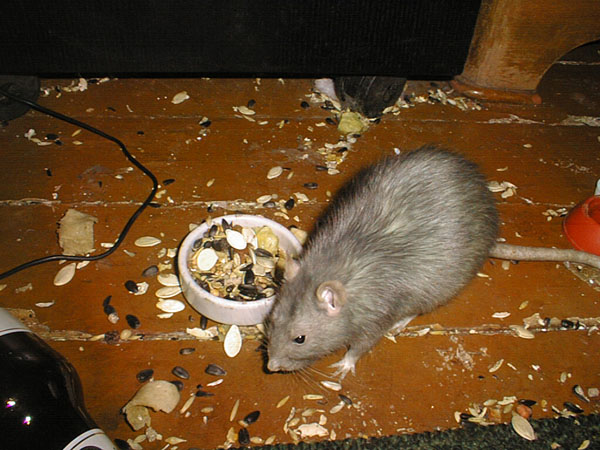
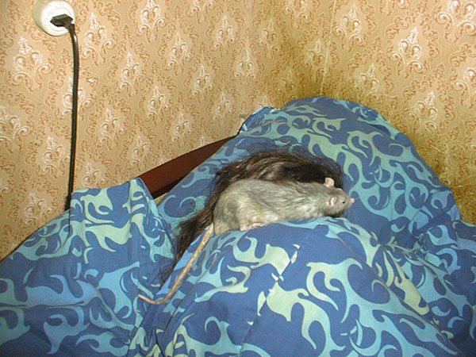
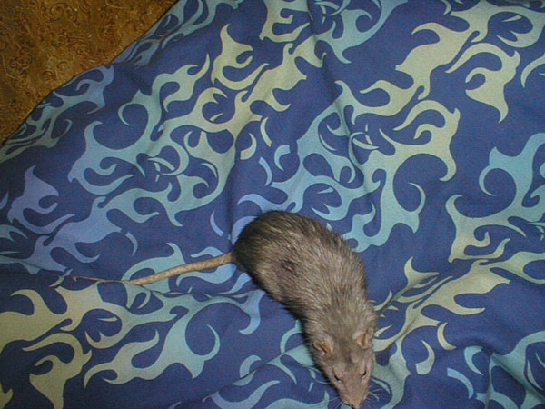
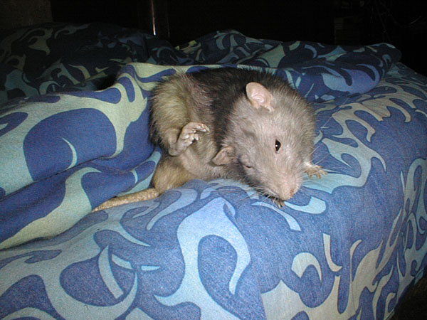
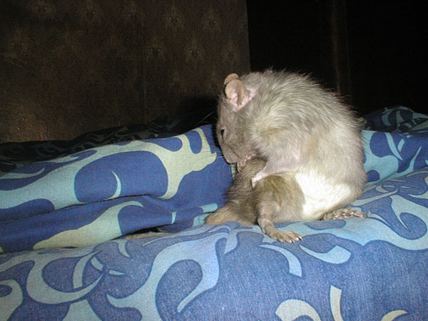

Один
Ноябрь 2004
Одину два года. У него начинают слабеть ноги, но он не считает себя инвалидом, хотя иногда и просит помочь забраться в стол или на кровать...

— Да, крысы и в столах живут... А почему нет-то?

— Кажется, я немного насвинячил...

— Ну?

— Па-а-адьем!!!

— Все, мавр разбудил — мавр может пойти гулять!

— Насколько я понимаю, со вчерашнего дня на кровати ничего не изменилось...

— А вот если человека придавить таким тяжелым одеялом, то он оттуда и не выберется!

— Я похож на атланта?

— Учу, как правильно чесаться. Делай раз...

— Делай два!

— А потом надо умыться. Целиком.

— Да, ноги тоже надо умывать!

— Ну а теперь можно и погулять...

— Когда вам кровать потребуется еще, я вам ее уступлю. Ну, или подвинусь...